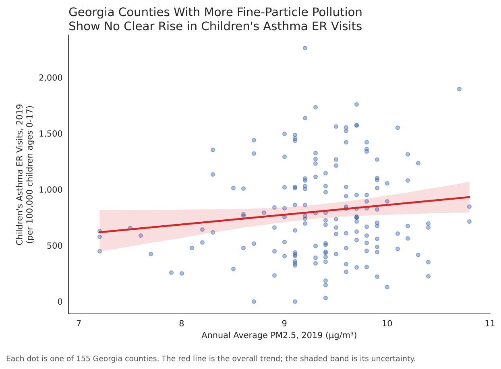

Do counties with more air pollution have more children's asthma ER visits?
Written for a public health program lead who plans children's asthma outreach for a group of Georgia counties.
Summary
Across Georgia's counties in 2019, counties with more fine-particle air pollution did not have clearly higher rates of children's asthma emergency room visits. Any link was too weak to tell apart from no link, though a strong one is ruled out.
Background
A program that plans children's asthma outreach has a limited number of nurses, home visits and dollars, so it has to decide which counties get them first. Air pollution is a common reason to pick one county over another. I checked whether, in Georgia, counties with more pollution really do have more children going to the emergency room for asthma.
I used two public data sources. The first is children's asthma ER visits (ages 0 to 17) by county, from the Georgia Department of Public Health's OASIS system. The second is yearly average fine-particle pollution, called PM2.5, by county, from the CDC's National Environmental Public Health Tracking Network. I joined them by county for 2019. I chose that year because statewide ER visits dropped sharply in 2020, probably because of COVID-19.
Methods
The data covers 155 of Georgia's 159 counties. Four very small counties were left out because the state hides rates based on only a few visits. For each county I lined up its pollution level against its rate of children's asthma ER visits per 100,000 children, using a standard way of measuring whether two things rise and fall together. I also checked the result several other ways, including averaging pollution over five and ten years and leaving out two counties that reported no visits at all. The answer did not change.
The biggest limit is that the pollution numbers are estimates calculated from computer models rather than readings from a monitor in each county, and they barely differ between counties (about 7 to 11 micrograms of particles per cubic metre of air). Small counties also have only a few thousand children, so a handful of visits can swing their rate. Together, these could hide a real effect.
Finding
Counties with more fine-particle pollution had slightly higher visit rates on average, but the difference was small and could easily be chance. The data cannot rule out a modest link, but it does rule out a strong one. Pollution accounts for only about 2 percent of the difference in visit rates between counties. The rest comes from things this data does not capture.

Two limits matter most for reading this. First, pollution varied little between counties and small counties' rates bounce around, so a real but modest effect could be hidden. Second, counties differ in income, housing and access to emergency care, which can affect both air quality and ER use. This data does not measure them, so they could be hiding a real link or distorting one. These are county figures for a single year, so they say nothing about any individual child.
Dade and Quitman counties reported no children's asthma ER visits at all, even though their air was in the middle of the range. That may be a low-count effect, since rates in very small counties are unreliable.
Implications
For a public health program lead deciding which Georgia counties get children's asthma outreach and home-visit capacity in next year's plan, this points toward choosing counties by their own asthma ER rates rather than by how polluted their air is, because counties with more pollution did not have clearly higher rates. It doesn't settle whether air quality affects any individual child's asthma.
ER rates have their own problems. They reflect where emergency care is available, and they swing widely in counties with few children, so they are only a rough guide to which counties need outreach.